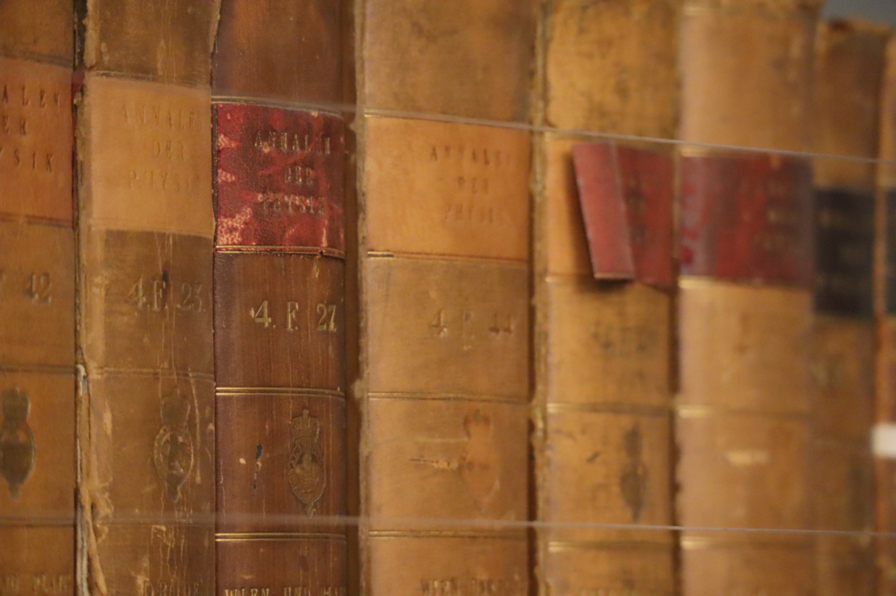

About
We are organising an independently led informal discussion of scientific literature. Our meetings usually focus on condensed matter and photonics theory and take place via Zoom. The conventional meeting time is:
Friday 12:00 (noon)
Note: this time is negotiable, depending on the availability of our speaker.List of talks
Below is a list of our talks and speakers, ordered by date. Zoom link and reference to any relevant literature are sent typically one week ahead of the talk via our mailing list.Upcoming:
26/05/23 - "The Quantum Rabi Model", T. Allcock.
Past Talks:
03/03/23 - "Normalization methods of the resonant states", S. Almousa
17/02/23 - "Förster Resonance Energy Transfer" , L. Sirkina.
03/02/23 - "Multilevel Systems in Quantum Optics", T. Allcock.
20/01/23 - "Treating Bragg’s microcavity by the Resonant state expansion", S. Almousa.
16/12/22 - "Four-Wave Mixing in extended and subwavelength media" , L. Sirkina.
02/12/22 - "Nonlinear Cavity QED: N-wave mixing", T. Allcock.
18/11/22 - "Resonant State Expansion in optical systems and in quantum mechanical systems", S. Almousa.
08/11/22 - "Other basic models in quantum optics" (Part II, in person), L. Sirkina.
04/11/22 - "Other basic models in quantum optics: Quantum Rabi, Tavis-Cummings, Dicke - their common generalisations and what physics they describe" (Part I), L. Sirkina.
21/10/22 - "The Jaynes-Cummings model", T. Allcock.
07/10/22 - "Resonant states and their role in nanophotonics", S. Almousa.
23/09/22 - "Quantum master equations for a system-environment interaction", L. Sirkina.
Participation
Our regular group typically meets once a fortnight. We may schedule extra meetings in between our regular sessions to accommodate extra talks if the need arises.
Extended talks:
If you are interested in presenting or listening to a talk, please e-mail . These talks will only proceed provided we have a speaker. You are thus encouraged to volunteer for presenting a talk.The proposed structure and basic rules for our meetings is attached below.
Meeting structure and provisional guidelinesIf you have any suggestions, you are very welcome to e-mail them to the address specified above.
